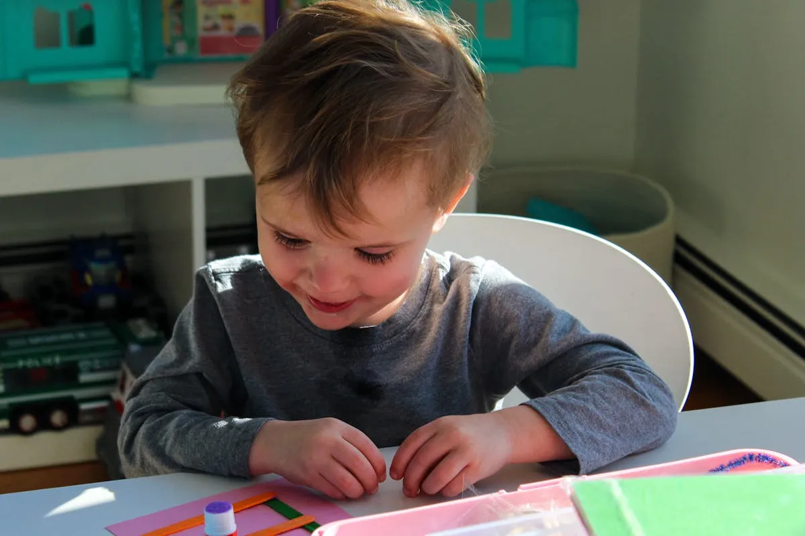
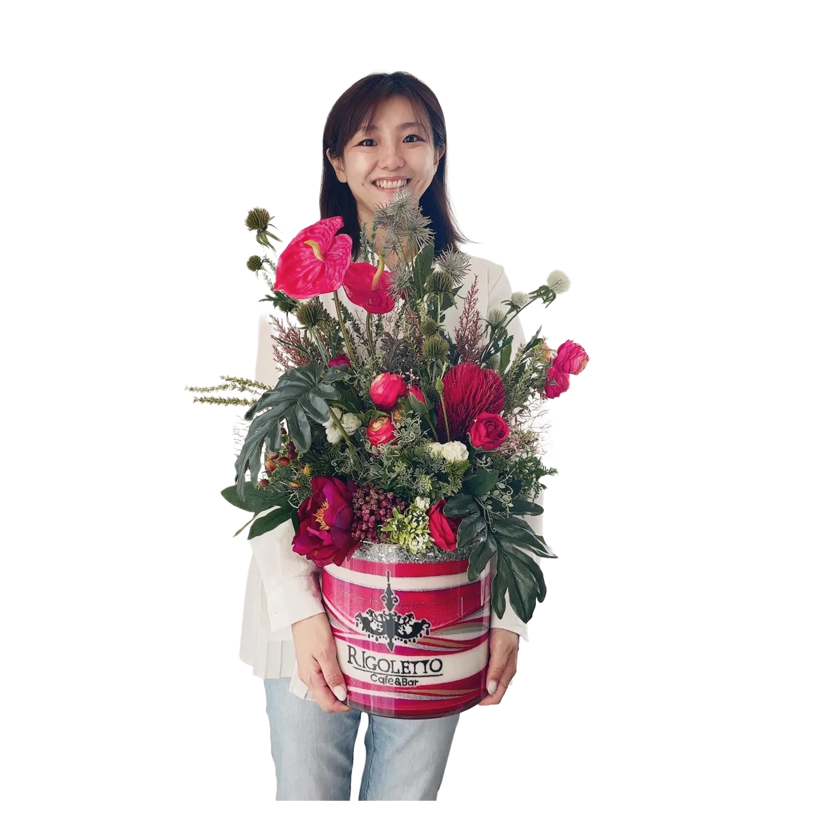

「アート活動を取り入れたいけど、発達特性に合う内容が見つからない」
「作品作りで失敗体験をさせたくない」
そんな特別支援学級・放課後等デイサービスの先生方へ。現役サンドアート講師が、感覚刺激・自己肯定感アップにつながるサンドアート活動をご紹介します。
特別支援の現場でアート活動が選ばれる理由
特別支援学級や放課後等デイサービスにおいて、アート活動は「表現の場」「感覚統合の場」「自己肯定感を育てる場」として大きな役割を担っています。ただの遊びではなく、子どもたちの発達を支える重要な時間として位置づけられているのです。
感覚遊び・感覚統合としての役割
砂の感触は、子どもの感覚刺激に最適な素材です。サラサラとした触り心地、手のひらに感じる重み、指の間からこぼれる感覚——こうした「触覚刺激」は情緒の安定にもつながるといわれています。
手先の感覚を通じて気持ちが落ち着くお子さんも多く、「最初は落ち着かなかった子が、砂を触り始めたら黙々と集中していた」というエピソードは、支援現場でよく聞かれる声です。
自己肯定感を育てる成功体験の大切さ
特別支援の子どもたちの中には、「どうせできない」「また失敗する」と思い込み、挑戦をためらう子も少なくありません。だからこそ必要なのが「できた！」の成功体験の積み重ねです。
サンドアートは他児と比較されない個別の達成感が得られるアート。「上手・下手」の評価がないので、その子なりのペースで完成まで進められます。作品を手にしたときの誇らしげな笑顔——それが次のチャレンジへの原動力になります。
サンドアートが特別支援に適している5つの理由
理由1：失敗がない
サンドアートは砂を入れるだけで必ず美しく完成するアートです。「こう作らないといけない」という正解がないので、自由に取り組めます。
色の組み合わせや重ね方に「間違い」はありません。子どもが選んだ色、入れた順番、そのすべてが「作品」として美しく形になります。だから、「失敗」という概念そのものがないのです。
理由2：感覚統合に役立つ
サンドアートは複数の感覚を同時に使う活動です。
- 触覚：サラサラとした砂の感触
- 視覚：色鮮やかな砂の重なり
- 運動感覚：スプーンで砂をすくい、グラスに入れる動作
これらを同時に使うことで、脳の発達を促す「感覚統合」の練習にもなります。作業療法士や療育の現場でも、こうした感覚刺激は高く評価されています。
理由3：集中力が自然と続く
砂が層になって積み重なる視覚的な楽しさに、子どもたちは自然と引き込まれます。「次はこの色にしよう」「もっと入れたい」と、15〜30分、黙々と取り組むお子さんが多数います。
普段は集中が続きにくいADHDのお子さんでも、サンドアート中は時間を忘れて没頭することが多いです。「こんなに長く座って取り組んでいるのは初めて」と、先生方から驚きの声をいただくことも。
理由4：個別対応がしやすい
サンドアートは一人ひとりのペースで進められるアートです。早く完成する子もいれば、じっくり時間をかける子もいて、どちらも「その子らしい」作品になります。
また、感覚過敏で砂に直接触れるのが苦手な子は、手袋やスプーンを使って参加することも可能。一人ひとりの特性に合わせた配慮がしやすい活動です。
理由5：作品がそのまま「ポートフォリオ」に
完成した作品はインテリアとして飾れるだけでなく、保護者との情報共有の材料としても大活躍。「今日こんな作品を作りました」と見せることで、家庭と学校・デイをつなぐコミュニケーションツールになります。
さらに、月ごと・年度ごとに作品を写真に残せば、お子さまの成長記録としての「ポートフォリオ」にもなります。
こんな子が夢中になります
これまで多くの特別支援の現場でサンドアートを実施してきた中で、特に夢中になりやすいお子さまの特性をご紹介します。
ADHD・注意欠陥傾向のある子
短時間で完成するので、最後まで集中力が持続します。「じっとしていられない」と言われてきた子が、気づけば30分以上、集中して作業していたというケースも珍しくありません。
自閉スペクトラム症（ASD）の子
砂の感触で気持ちが落ち着く子が多く、また同じ作業を繰り返すことが心地よく感じられるのも特徴です。色を決めて・すくって・入れる——このルーティンが安心感を生みます。
発達性協調運動障害（DCD）の子
細かい手作業が難しいお子さまでも、見栄えの良い作品に仕上がるのがサンドアートのすばらしさ。「自分にもできた」という自信が、次の挑戦への意欲につながります。
身体に障害のある子
座ったままでも、片手だけでも参加可能です。スプーンの大きさや形を変えたり、サポートを工夫すれば、どんな子でも「自分で作った」と感じられます。
支援現場での導入、LINEで気軽に相談♪
お子さまの特性に合わせた進め方もご相談可能。
まずはお気軽にご質問ください。
実施方法（先生方の負担を最小に）
「イベントを企画したいけど、準備が大変そう…」という先生方の声にお応えして、先生方の負担を最小限にする仕組みを整えています。
出張ワークショップ
講師が教室や事業所に伺います。材料・道具すべて持参するので、先生方の準備・片付けは一切不要です。
- カラフルな砂（15色以上）
- グラス・スプーン・じょうご
- 持ち帰り用の袋
- 下に敷くシート（砂の片付け用）
先生方は子どもたちの様子を見守るだけでOK。普段とは違う視点でお子さまたちを観察できる貴重な時間にもなります。
オンライン開催
遠方の学校やデイサービスも対応可能。材料キットを事前に発送し、Zoomなどで講師がリアルタイムに進行します。
「福岡からは遠くて呼べない…」と諦めていた地域の施設からも、オンラインなら気軽に導入いただけます。時差があっても調整可能です。
料金の目安
| 出張ワークショップ | 1人 2,000円〜 （材料費込み／交通費別途） |
|---|---|
| オンライン体験 | 1人 2,000円〜 （材料キット送料別） |
| 所要時間 | 約30〜60分 |
| 対象年齢 | 3歳〜高校生 |
| 人数 | 3名〜（クラス単位の分散開催も可） |
| 対応エリア | 福岡から全国出張対応／オンラインは全国・海外OK |
よくある質問
感覚過敏で砂を触るのが苦手な子もいますか？
全員が同じように参加する必要はありません。手袋・スプーンなど代替手段もご用意しますし、見学のみの参加も歓迎です。一人ひとりのペースで安心して取り組めるよう配慮いたします。
人数は何人から対応可能ですか？
3名様から承ります。クラス単位（10〜30名）も分散開催で対応可能です。人数に応じた最適な進め方をご提案しますのでご相談ください。
支援級の先生が主催する場合、下準備は必要ですか？
基本的に不要です。会場とテーブル・椅子のみご用意いただければ、あとはすべてこちらでお持ちします。材料・道具・作品を持ち帰る袋までフルセットでご用意します。
先生方も一緒に参加できますか？
はい、ぜひご一緒にご参加ください。先生と一緒に作ることで、子どもたちもより安心して取り組めます。先生自身のリフレッシュにもつながると好評です。
お申し込み方法
お申し込みはとっても簡単。LINEで「特別支援の活動で相談」と送るだけ！あとはこちらからご案内します。
特別支援向けサンドアート活動
1人 2,000円〜｜材料・道具フル装備｜全国対応
LINEで「特別支援の活動で相談」と送るだけ！

原野 玲未REMI HARANO
サンドアート講師 / Webエンジニア / 5児の母
福岡県在住。日本サンドアート協会認定講師として年間100件以上のワークショップを開催。特別支援学級・放課後等デイサービスでの実施経験も多数。一人ひとりの特性に寄り添ったレッスンを心がけています。